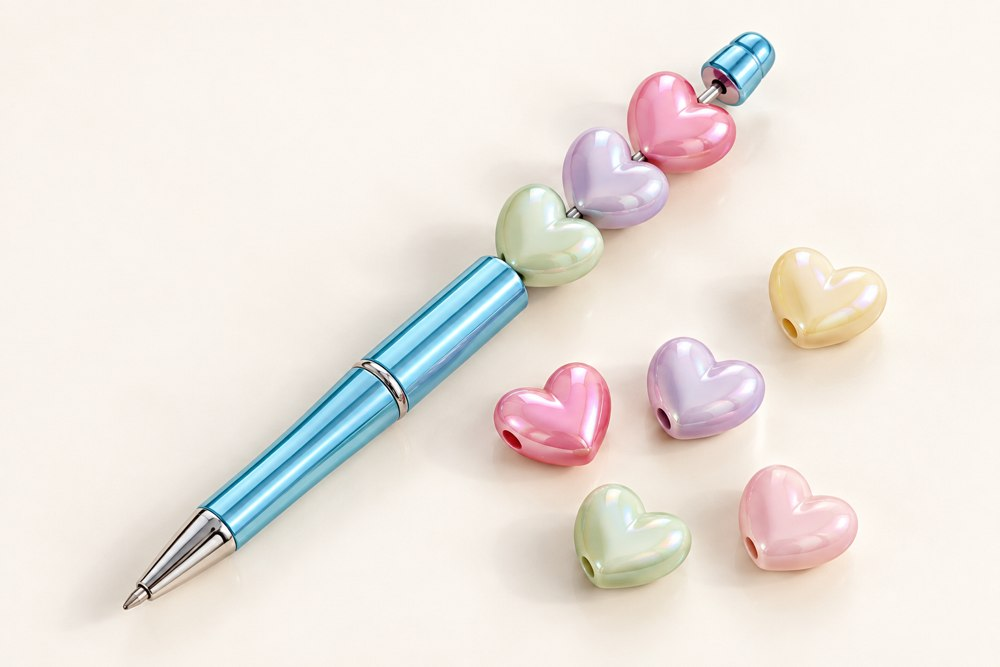

How to choose the right pen beads
A beautiful pen starts with beads that fit. Here's how to choose the size, check the hole and plan a combination your customers will love.
Find your fit, step by step ↓
Will it slide on?
Match the hole to the widest part of the rod.
Will the stack fit?
Count the space taken by every bead and spacer.
Does it look right?
Check shape, direction, color and balance together.
One bead. Three different measurements.
The “15 mm” in a bead name usually describes its outside size. It tells you how large the bead looks—not how large its hole is.

Outside diameter
Controls the visual size of a round bead. For a heart, leaf or character, ask for width, height and thickness instead.
Hole diameter
Controls whether a bead slides onto the rod. Confirm the opening for the exact SKU; similar-looking beads can have different holes.
Stack height
The space a bead takes up along the rod. On a shaped bead, this may differ from its width or the longest side in a photo.
Ask which way the hole runs. A side-drilled heart can face differently from a top-to-bottom drilled heart.
Measure the space the beads actually use.
The pen grip is not the bead rod. Overall pen length is not usable beading length.
Rod diameter: check the loading path
Following the pen supplier's instructions, remove the end fitting if allowed. Use a caliper to measure the rod and any threads or raised sections a bead must pass over. Record the largest diameter.
Usable length: measure between the stops
Measure from the lower shoulder to the underside of the upper stop in its correctly secured position. Exclude any space needed for thread engagement or hardware. This available space is L.
A rigid bead with a nominal 2.5 mm hole is not automatically compatible with a nominal 2.5 mm rod. Tolerances, thread size and hole finish matter.
If the seating position is unclear, send the pen supplier a photo and ask for a dimensioned drawing. Small holes are better checked with suitable gauges or an actual sample than estimated from a photograph.

Add the beads. Include the spacers.

A bead can fit the rod and still make the finished stack too long.
Add each component's occupied height along the rod. Include spacers and decorative caps. If a cap overlaps a bead, measure the combined assembly rather than counting the overlap twice.
3 beads × 15 mm 45 mm
2 spacers × 2 mm 4 mm
Total occupied 49 mm
Space remaining 1 mm
The 1 mm remainder is a calculation result, not a universal clearance recommendation. Test the assembled sample before approving the layout.
What if it doesn't fit?
- Too long: reduce bead height, remove a spacer or select another pen blank.
- Too loose: revise the spacer combination within the pen supplier's instructions.
- Hole too small: choose a compatible bead; don't force it onto the rod.
Always check that the end fitting closes correctly and the pen writes normally. Do not leave the cap partly fastened to gain space.
Compare real specifications.
Start with the shape you like, then confirm the dimensions your pen needs.
 YA893 · ACRYLIC
YA893 · ACRYLICColorful round beads
100 pieces per bag. A round shape is easy to compare visually, but the hole size still needs confirmation for your blank.
View YA893 → YA425 · ACRYLIC
YA425 · ACRYLICPearlescent heart beads
500 g per bag. Confirm dimension directions, hole orientation and occupied height before planning the stack.
View YA425 →These are separate product specifications, not a pre-approved bead-and-pen set. Product dimensions are based on the September 30, 2026 listing information; confirm current specifications with your quotation.
Choose a focal. Build around it.
Shape & direction
Check how a heart, leaf or character faces when threaded. Leave room around clips and end fittings. Send a sketch of your intended arrangement.
Color & finish
Compare the actual acrylic or resin sample. An AB finish changes appearance with the light, so agree viewing conditions when approving colors.
Balance & handling
Try writing with the assembled pen. A large focal may look attractive but feel top-heavy or interfere with your hand.
For more styles, browse focal beads for pens or acrylic beads. Our wholesale buying guide compares seven acrylic styles and their pack references.
Send the pen measurements.
We'll help review the beads.
Share the bead SKU, your pen blank and the combination you have in mind. We can review dimensions, sample requirements and order details with you.
Ask about your bead combination →- Bead SKU, color and material
- Pen blank photo or model
- Largest rod diameter, in mm
- Usable beading length L, in mm
- Quantity, pack preference and sample needs
- Destination and requested delivery date
Pack size and MOQ are different. A 500 g bag does not equal 500 pieces. Prices, minimum quantities and dispatch timing are confirmed by quotation. Pen blanks and photo props are included only when specifically listed.
Quick answers before you order
What size beads fit beadable pens?
Check the hole diameter against the largest part of the rod the bead must pass over, then compare the complete bead-and-spacer stack with the usable beading length. Outside diameter alone cannot confirm fit.
How many beads can I put on a pen?
Add the occupied height of every bead, spacer and fitting. Compare this total with the pen's usable space and test the assembled sample; there is no fixed bead count for all pens.
Will a 2.5 mm hole fit a 2.5 mm rod?
Equal nominal values do not establish a sliding fit for rigid beads. Confirm the widest loading-path diameter, tolerances and hole finish, then test the exact combination.
Can you help with a custom collection?
Custom components and finished accessories can be discussed individually. Send your reference design, material preference, quantity and packaging needs so the project can be reviewed by email.